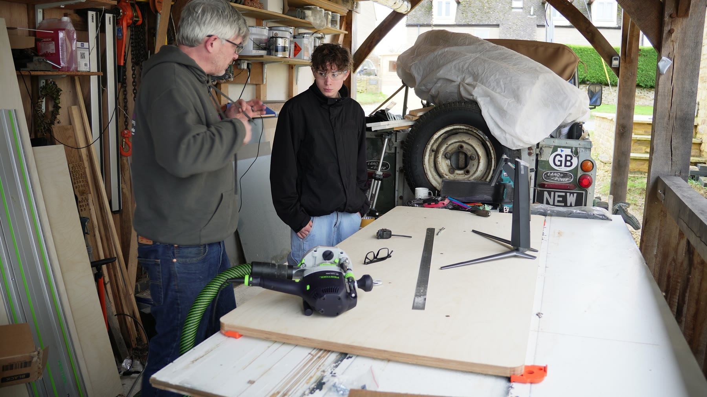
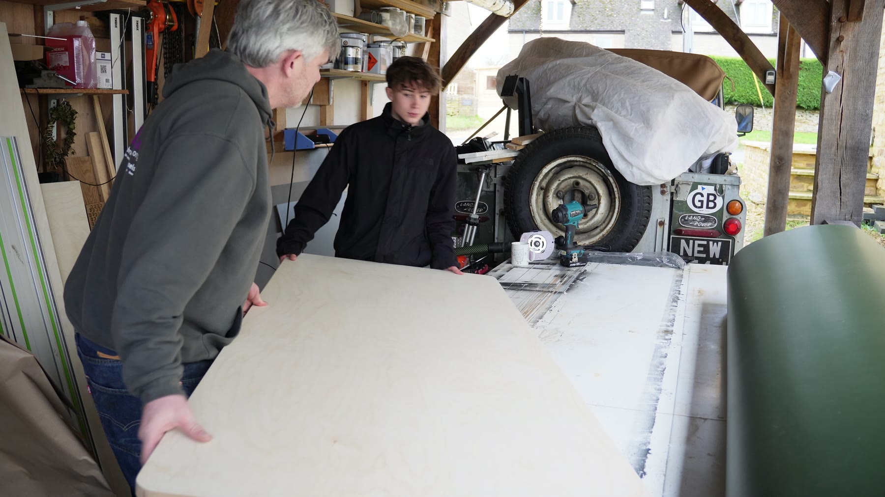
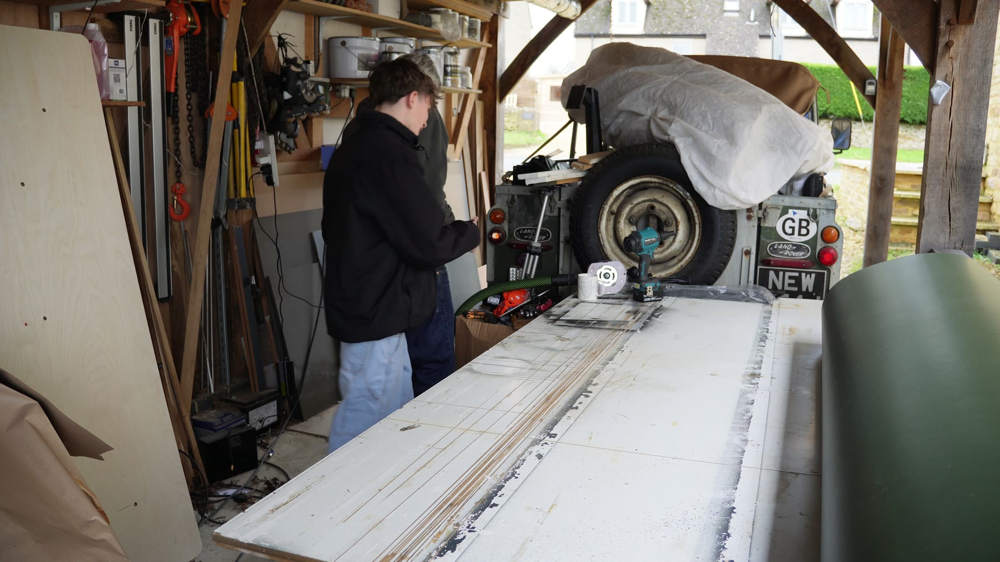

Timber top
Woodwork / standing desk / family workshop
Motorised Standing Desk
A height-adjustable desk I built with my son: part furniture, part workshop problem-solving, part excuse to spend a day making something useful together.
The media is not polished studio footage, which is probably why I like it. It has measuring, cutting, test-fitting, sunlight, clutter, and the familiar moment where the thing starts becoming a real object.
Build footage
Turning the idea into an actual desk.
The satisfying middle bit: checking the frame, marking out the top, working through alignment and finding the shape of the thing rather than just assembling parts from a box.
The build
Useful, physical, shared.
I like projects where the result has to survive real use. This one mixed the pleasant practical stuff of furniture making with the more systems-minded work of fitting a height-adjustable frame into something that should quietly behave itself every day.
The best bit
Building with my son.
The desk is nice, but the better thing is the collaboration: measuring, checking, deciding, adjusting, and sharing the little engineering rituals that turn a pile of parts into a thing that works.


